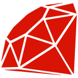

Aboutプロフィール
Shogo YAMAGISHI山岸翔梧
Kanazawa University / Hori Laboratory
My goal is to improve everyday life through technology and chemistry. I studied electronics and computer science at National Institute of Technology (KOSEN), Nagano College, with a focus on putting technology into practice.技術や化学を使って日常を良くしたいという思いから、長野工業高等専門学校で電子情報工学を学び、社会実装を目指してきました。
I came to see a deeper understanding of underlying principles as essential to that goal. I now study theoretical and computational chemistry at Kanazawa University's College of Transdisciplinary Sciences for Innovation, aiming to integrate chemistry with my background in electronics and computer science.その実現には、基礎となる原理をより深く理解する必要があると考え、金沢大学融合学域で理論・計算化学を研究しています。これまでの電子情報工学と化学を融合させることを目指しています。
My other activities include video production, live streaming, sound, amateur radio, science education and open data.映像制作・配信・音響、アマチュア無線、科学教育、オープンデータにも携わっています。
- Affiliation
- Kanazawa University
School of Smart Technology and Innovation
College of Transdisciplinary Sciences for Innovation金沢大学 融合学域 スマート創成科学類 - Work
- MoveEz, inc. ↗Public Relations Assistant / Part-time広報アシスタント
- Hometown
- Born in Tsukuba, Ibaraki / Raised in Suzaka, Nagano茨城県つくば市生まれ / 長野県須坂市育ち
- Call sign
- JJ0TYU/9
Education & Experience学歴・職歴
- PRESENT
Kanazawa University金沢大学
School of Smart Technology and Innovation
College of Transdisciplinary Sciences for Innovation融合学域 スマート創成科学類
Hori Laboratory — Theoretical & Computational Chemistry堀研究室 — 理論化学・計算化学 - 2025.05 —
MoveEz, inc. ↗
Public Relations Assistant / Part-time広報アシスタント
- BACKGROUND
National Institute of Technology (KOSEN), Nagano College長野工業高等専門学校
Department of Electronics and Computer Science電子情報工学科
Studies in electronics and computer science.
Research研究
Theoretical & Computational Chemistry理論化学・計算化学
At Hori Laboratory in Kanazawa University's College of Transdisciplinary Sciences for Innovation, I study theoretical and computational chemistry. My aim is to bring electronics and computer science together with chemistry through research grounded in an understanding of underlying principles.金沢大学融合学域の堀研究室で、理論・計算化学に取り組んでいます。基礎となる原理の理解を深めながら、電子情報工学と化学を融合する研究を目指しています。
Lab websiteElectronics & Computer Science電子情報工学
Research in AI and computer-generated holography.AI・計算機合成ホログラフィに関する研究
Research Outputs研究業績
-
Theoretical Study of Factors Stabilizing NLX-101 Binding to the 5-HT1A Receptor5-HT1A受容体とNLX-101の結合安定化要因に関する理論研究
Kuju Molecular Science Seminar 2026九重分子科学セミナー2026 / 口頭発表
Presentation record -
Evaluating the Educational Effectiveness of a Microcontroller Simulator for Beginners
Shogo Yamagishi, Ren Shimizu, Akitaka Higashi, Megumi Futatsugi
The 20th International Conference on Knowledge, Information and Creativity Support Systems (KICSS 2025),
DOI: 10.34385/proc.95.18 -
Manual, Restructured, and AI-Assisted KJ Methods: An Exploratory Comparison
Megumi Futatsugi, Shogo Yamagishi, Minatsu Ariga, Akitaka Higashi
The 20th International Conference on Knowledge, Information and Creativity Support Systems (KICSS 2025),
DOI: 10.34385/proc.95.3 -
Investigation of AI Models for Generating Computer-Generated Holograms from Planar Images平面画像から計算機合成ホログラムを生成するAIモデルの検討
National Institute of Technology (KOSEN), Nagano College / Department of Electronics and Computer Science長野工業高等専門学校 電子情報工学科 / 卒業研究
Awards & Qualifications表彰・資格
President's Encouragement Award学長奨励賞
Kanazawa University / Outstanding academic achievement.金沢大学 / 学業成績優秀による表彰
Student Award — Academic Year 2022学生表彰（2022年度）
National Institute of Technology (KOSEN), Nagano College / Exemplary achievements and contributions.長野工業高等専門学校 / 他の学生の模範となる活動・貢献
Student Award — Academic Year 2021学生表彰（2021年度）
National Institute of Technology (KOSEN), Nagano College / Leadership in volunteering and contributions to community projects.長野工業高等専門学校 / ボランティア活動でのリーダーシップと地域への貢献
Qualifications & Appointments資格・修了講座・委嘱
Global Consumer Intelligence (GCI) — Certificate of CompletionGCI 修了
The University of Tokyo東京大学
Digital Accessibility Advisor — Basic Level (2022)デジタルアクセシビリティアドバイザー Basic（2022）
Japan Assistive Technology Committee日本支援技術協会
Open BadgeCertified Disaster Prevention Specialist (Bousaisi)防災士
Japan Bousaisi Organization日本防災士機構
Japanese Amateur Third-Class Radio Operator License第三級アマチュア無線技士
Ministry of Internal Affairs and Communications, Japan総務省
Volunteeringボランティア
- — Present
Science Club Supporter — Information Center Science Club情報センター科学クラブ / サポーター
Supporting science and technology education, club operations and educational programs.
- —
Science Club Supporter — Suzaka City Technical Information Center須坂市技術情報センター 科学クラブ / サポーター
Supporting science and technology education, club operations and educational programs.
- —
Science Club President — Suzaka City Technical Information Center須坂市技術情報センター 科学クラブ / 部長
Led science and technology activities through ICT, digital fabrication, research projects and collaborative learning.ICT・デジタルファブリケーション・研究活動・協働学習を通じた学習活動の運営
- —
Canna School Contact — Project Leadership & Managementカンナスクールコンタクト / 統括・マネジメント
Led and managed the entire ARISS project connecting elementary school students in Suzaka with astronauts aboard the ISS via amateur radio.須坂市の小学生とISSの宇宙飛行士による無線交信プロジェクト全体を統括
Project website
Skillsスキル
- Research & Technology研究・技術
- Electrical engineering, computer science, transdisciplinary sciences, physical chemistry, theoretical chemistry, computational chemistry, AI, DNN, holography, FPGA, autonomous vehicles, radio and educational technology.電気工学、計算機科学、融合科学、物理・理論・計算化学、AI・DNN、ホログラフィ、FPGA、自動運転、無線、教育工学
- Languages & Tools言語・環境
-




- LISP
- Verilog
- Media & Communications制作・広報
- Video editing (DaVinci Resolve), public relations and press releases.動画編集（DaVinci Resolve）、広報、プレスリリース